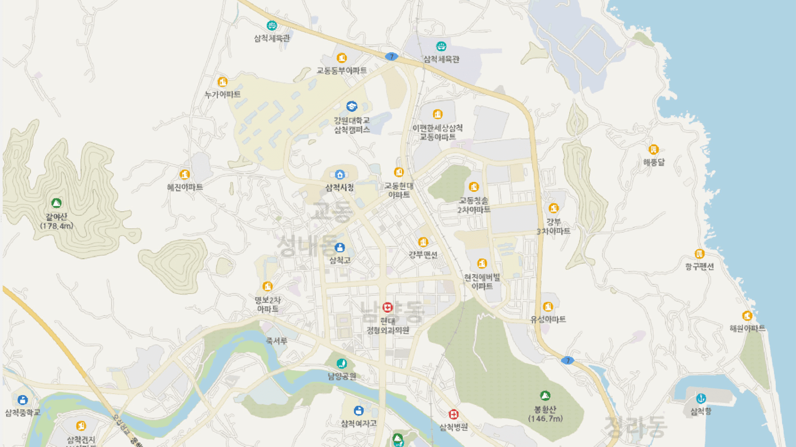

실시간 모니터링
2023.10.10 침수예측 미확인 현황 4건
-
침수위험
- 담당자홍길동
- 침수예측일자2023-10-10 12:34:56
- 대상지역경기도 용인시
-
침수경계
- 담당자홍길동
- 침수예측일자2023-10-10 12:34:56
- 대상지역경기도 용인시
-
침수주의
- 담당자홍길동
- 침수예측일자2023-10-10 12:34:56
- 대상지역경기도 용인시
-
침수안전
- 담당자홍길동
- 침수예측일자2023-10-10 12:34:56
- 대상지역경기도 용인시

@@include('../../inc/pop/p_forecast.html')
IOT센서
- 분류코드S15
- 유형하천 수위계
- 설치장소경안천 상류
- 수위9.5m
관로
- 관로IDPH-1
- 유형수위계
- 현재수심00㎜
- 예측수위9.5m